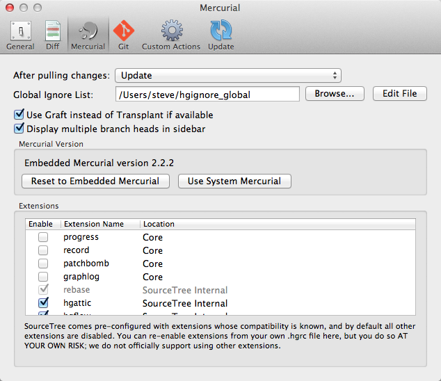

Preferences: Mercurial

After pulling changes - The default action to take after pulling changes from remotes:
- Do Nothing - changes are pulled but the working copy is not altered.
- Update - the working copy is updated to the latest pulled changeset, if there are no local commits on that branch.
- Update, Merge & Commit - as 'Update', except if there are local commits which require merging, perform the merge too and commit if there are no conflicts. This uses the 'Fetch' extension.
- Rebase - as 'Update', except if there are local commits, rebase those commits on to the latest pulled change for this branch.
Global ignore list - The file containing the global ignore patterns (a default one is set up for you if you didn't have one already)
Use Graft instead of Transplant where available - Mercurial 2.0 introduced a smarter version of Transplant called Graft, which SourceTree uses by default. If you'd prefer to use the older Transplant instead you can enable this option.
Display multiple branch heads in sidebar - when multiple heads exist for a single branch, SourceTree will display both heads in the sidebar by default so that you can navigate to them more easily. If you prefer not to see multiple heads in the sidebar and only see them in the log, disable this option and SourceTree will only display the latest head per branch.
Mercurial version - by default the embedded version of Mercurial is used, here you can switch to your system version of Mercurial (and back again).
Extensions - here you can enable custom Mercurial extensions that you already have listed in your own ~/.hgrc. Use with caution, SourceTree does not officially support any extensions other than those enabled by default, but this option may help if you have additional extensions you really need to use.
See also
General Preferences
Diff Preferences
Git Preferences
Custom Actions Preferences
Update Preferences